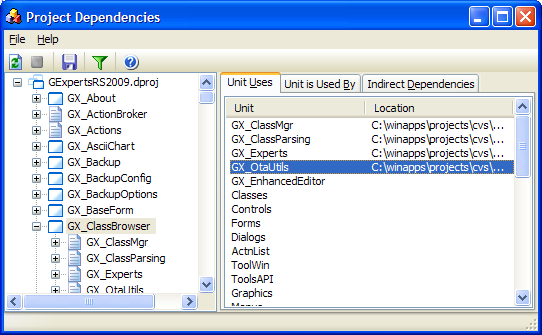

Project Dependencies |
|
The project dependency expert enables you to see what units a particular unit uses, and in turn what units use a particular unit. When this expert is activated, it parses all of the current project's source code for uses clauses and builds up a list of dependencies. To view the dependency information for a particular unit, click on it in the left pane. The right pane will contain the dependency information. Indirect dependencies are units that are used by used units of a particular unit.
You can refresh the dependency information at any time by clicking the refresh button on the toolbar and you can sort the file listing by clicking on the column headers. 
|